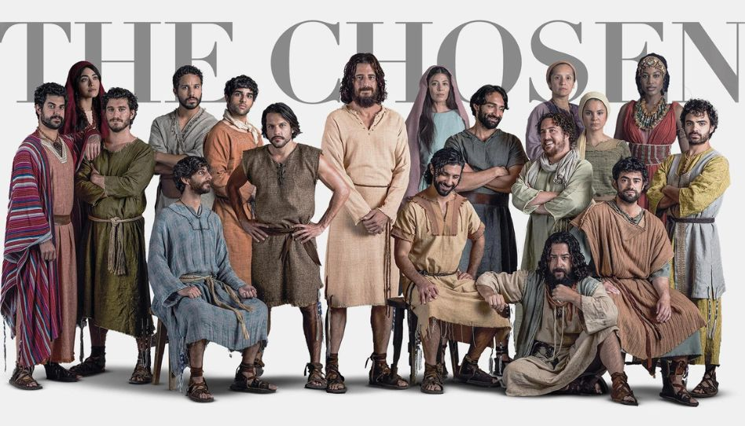
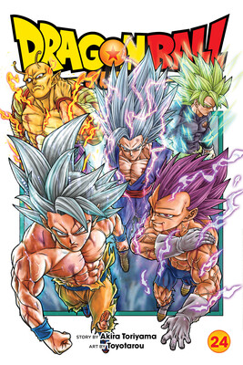
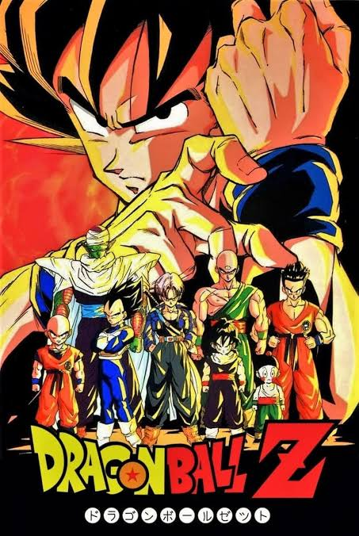
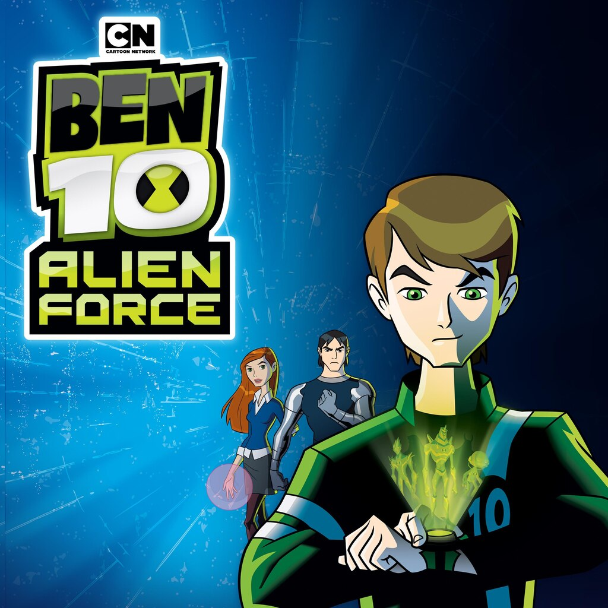

Segue Abaixo as melhores series

É uma série que conta sobre o que fez Jesus Cristo no seu tempo como Homem na terra

Dragon Ball Super se passa após a derrota de Majin Boo, quando a Terra vive em paz. Goku busca novos desafios ao enfrentar divindades poderosas, como o Deus da Destruição Bills, alcança o poder dos deuses e viaja por universos paralelos para disputar torneios e combater ameaças multiversais

Dragon Ball Z acompanha Goku adulto que, ao lado de seu filho Gohan e aliados como Piccolo e Vegeta, defende a Terra contra ameaças espaciais e universais. A série de 291 episódios foca em combates intensos e na evolução de poderes transcendentais.

Ambientada cinco anos após a série original, Ben 10: Força Alienígena mostra Ben Tennyson com 15 anos tendo que usar o Omnitrix novamente para encontrar o Vô Max, que desapareceu enquanto investigava uma conspiração secreta da raça alienígena Soberanos (Highbreed) para invadir e dominar a Terra